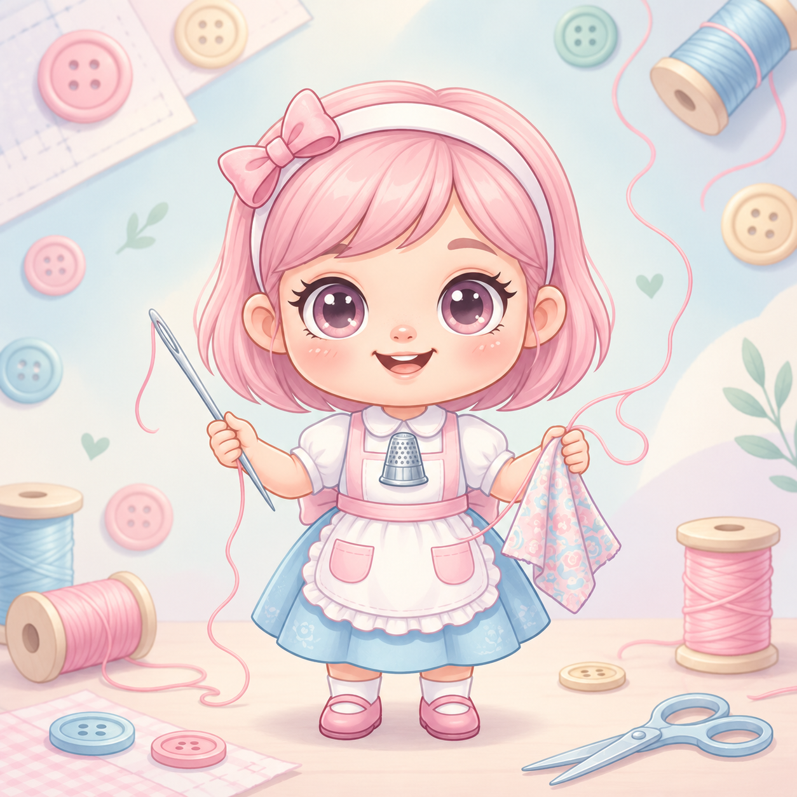
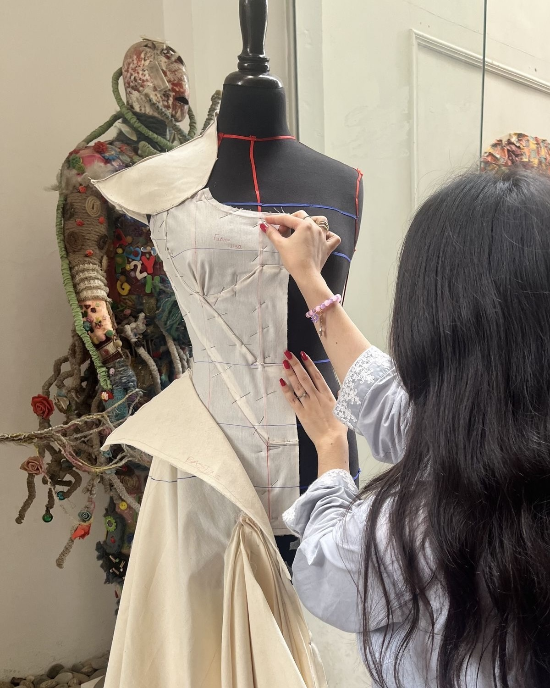
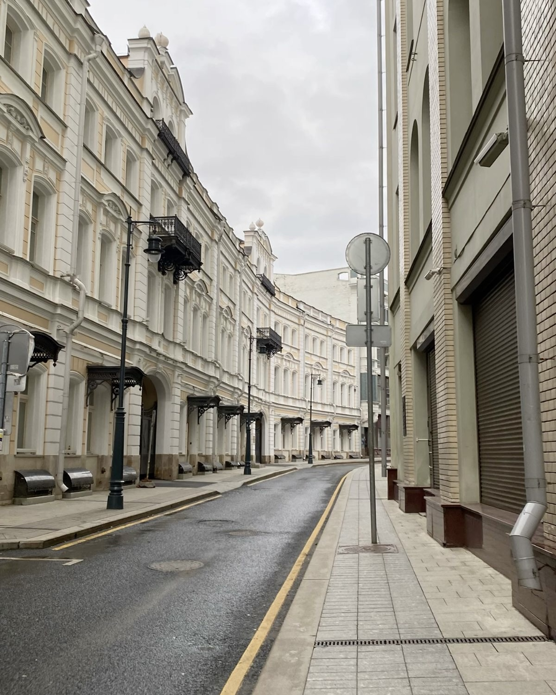
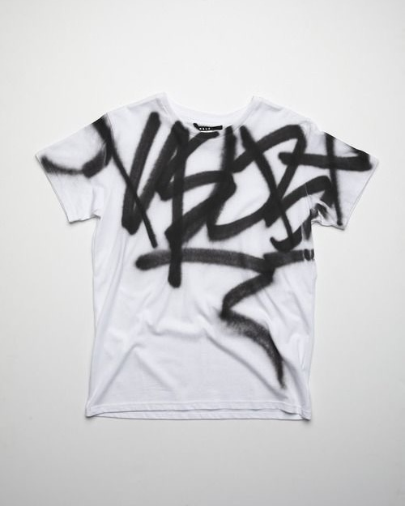

01. Новая футболка
Из обычной вещи — в собственный дизайн.
Мы даём старой одежде вторую жизнь. Кастомизируем вещи, экспериментируем с дизайном и создаём собственный мерч.
Знакомство с проектом ↘

Даже привычная одежда может начать новую историю, если добавить немного фантазии.
01 / НАЧАЛО
Любимая вещь со временем теряет актуальность. Но это ещё не конец — это материал для новой идеи.
Необязательно выбрасывать старую футболку, если она тебе надоела.
«Вещь с историей» — школьный проект, в котором мы превращаем ненужную одежду в интересные вещи с собственным характером.
Немного творчества, новые идеи — и обычная вещь получает вторую жизнь.

Собираем вещи, которые больше не носят, но которые ещё можно использовать.
Выбираем идеи, экспериментируем с рисунками, тканями и деталями.
Превращаем обычную одежду в уникальный предмет гардероба или мерч проекта.
Посмотри, как одежда может получить новое настроение — от простой вещи до собственного дизайна.
Из обычной вещи — в собственный дизайн.

Вдохновение уличной культурой.

Меньше лишних вещей, больше идей.
Одежда может получить вторую жизнь. А ты можешь стать частью этой истории.
Связаться с нами ↗